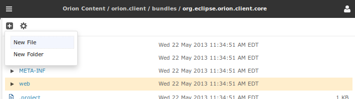
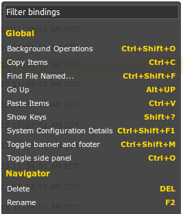

The Navigator page is your primary location for browsing and manipulating files in Orion. The page can be focused on any folder, including the root folder associated with each Orion user. The current folder being displayed is shown in the banner, with a breadcrumb showing the complete path to the folder.
The banner also includes the navigation drop down menu (the "hamburger") button and the options drop down menu button.
You can browse through a directory hierarchy either by clicking on a folder to open a Navigator page on that folder, or by expanding the tree to show children in the same page. You can navigate upwards by clicking a path in the breadcrumb, or by clicking Go Up (Alt+Up on the keyboard). Clicking a file will open a page for that file. For source code files (JavaScript, HTML, CSS), clicking on a file will open the Coding page.
The tool bar has two menu buttons. The New File and New Folder commands will operate on the selected folder and can be found under the New drop down menu. Commands that operate on selected files and folders in the list will appear in the Actions drop down menu.

Some commands are also accessible using the keyboard. Type '?' to display a list of available commands:

Select a file or folder by clicking or touching anywhere in that column, outside of the file name itself. Multi-selection depends on what form of input you are using:
You can navigate through the listed files in the Navigator using your keyboard:
This document is maintained in a collaborative wiki. If you wish to update or modify this document please visit http://wiki.eclipse.org/Orion/Documentation/User_Guide/Reference/Navigator_page